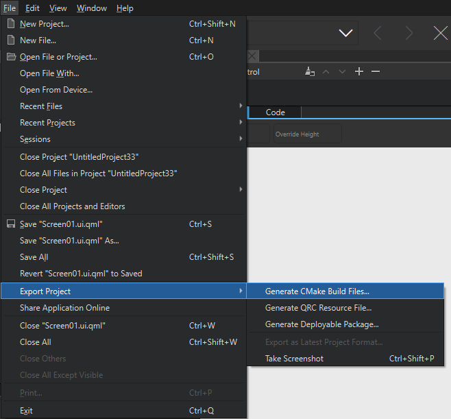
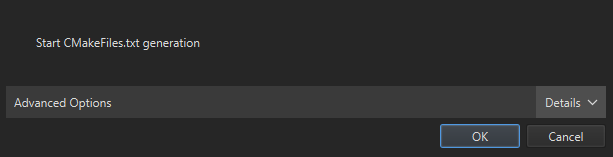
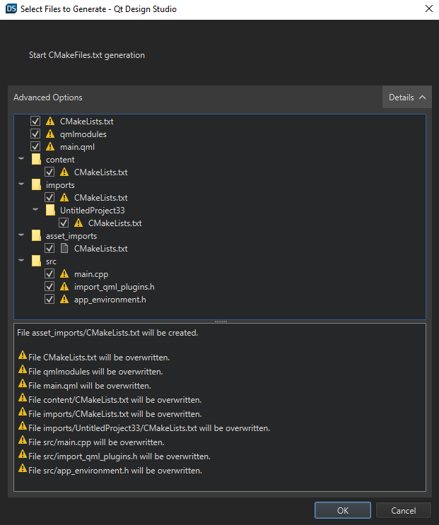

Designer-Developer Workflow
Note: In this section, you are using advanced menu items. These are not visible by default. To toggle the visibility of advanced menu items, see Customizing the Menu.
Qt Design Studio enables designers and developers to work together on common projects to develop applications. Designers use the views in the Design mode to modify UI files (.ui.qml), whereas developers use Qt Creator to work on the Qt Quick (.qml) and other files that are needed to implement the application logic and to prepare the application for production.
Use the Git version control system to ensure that changes are not lost when files are passed back and forth between designers and developers.
Qt Design Studio projects come with boilerplate code for a working Qt 6 application that you can build and run in Qt Creator using CMake. Therefore, you can open, build, and run the projects with Qt Creator.
Qt Design Studio continues to use the .qmlproject file format, while Qt Creator uses a CMakeLists.txt file as the project file. This enables you to share your project as a fully working C++ application with developers.
If you use Git, you can clone an example project here.
Exporting a Qt Design Studio Project
Qt Design Studio uses a different project format than Qt Creator. Qt Design Studio does not build the project, it uses a pre-compiled QML runtime to run the project. To export a Qt Design Studio project for the Qt Creator, follow the process:
- Open the project you want to export in Qt Design Studio.
- Select File > Export Project > Generate CMake Build Files.

- Select Details to access the Advanced Options.

Note: The project exporter has default settings selected. This works better if the project is combined with an existing Qt project.
- Select all the options here. This allows to export the complete project. So, it can be compiled as a stand-alone application.

Note: If you copy this export on top of the existing Qt Creator project it overwrites the existing project. Hence, the default selected options in the exporter only exports the QML-specific items. You get a list of warnings at the bottom part of the exporter that denotes exactly which parts of the project gets overwritten.
Using the Exported Project in Qt Creator
After exporting the project from the Qt Design Studio, you have to open it from Qt Creator.
If you have used any version before Qt Design Studio 4.0 to create the project, manually include this code in the CMakeLists.txt file so the exported project works in Qt Creator.
set(BUILD_QDS_COMPONENTS ON CACHE BOOL "Build design studio components") set(CMAKE_INCLUDE_CURRENT_DIR ON) if (${BUILD_QDS_COMPONENTS}) include(${CMAKE_CURRENT_SOURCE_DIR}/qmlcomponents) endif () include(${CMAKE_CURRENT_SOURCE_DIR}/qmlmodules)
Note: If you have created the project with the Qt Design Studio version 4.0 or above, you already have this code in CMakeLists.txt by default.